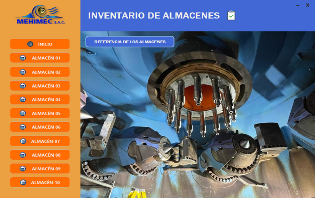
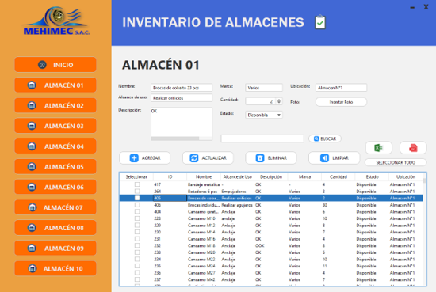

Portafolio
Proyectos destacados
Sistemas y aplicaciones que he desarrollado y mantenido en entornos reales.


Sistema de Inventario — Mehimec SAC
Sistema de escritorio para la gestión integral de inventarios y activos de un taller de mantenimiento electromecánico con múltiples almacenes. Permite registrar entradas y salidas de materiales, generar reportes de stock. Desarrollado con Java y JFrame, con base de datos SQLite.


Web Corporativa — Mehimec SAC
Soporte, mantenimiento y mejora del sitio web corporativo de Mehimec SAC, empresa especialista en mantenimiento electromecánico de centrales hidroeléctricas. Implementé solicitudes de cambio de contenido y estructura, optimicé el frontend para mejorar tiempos de carga y apliqué mejoras de UI/UX para una experiencia más profesional y corrección de errores visuales.
🛒
Sistema de Ventas
Aplicación de escritorio para gestión de ventas, inventario y reportes para pequeñas empresas.
📱
Apps Móviles Educativas — UNMSM
Desarrollo de aplicaciones móviles educativas y juegos en Kotlin para la Universidad Nacional Mayor de San Marcos. Diseño de interfaces adaptadas a dispositivos móviles con enfoque en usabilidad.
Formación
Estudios & Certificados
Mi formación académica y certificaciones profesionales.
Profesional Técnico en Desarrollo de Software
SENATI — Título a nombre de la Nación
2022 – 2025
Inglés — Nivel Intermedio
ICPNA — Intermedio 5 (en curso)
En curso
Maestro en Claude Code
Coursiv
Junio 2026
Maestro en Claude
Coursiv
Junio 2026
Power BI: Básico a Avanzado (90h · 19/20)
RTI Business College & UNP — Certificado Doble
Octubre 2025
Excel Nivel Intermedio
Santander Open Academy
Noviembre 2025
Operaciones CRUD y Consultas Avanzadas con MongoDB
Udemy
Octubre 2025
Oratoria para Profesionales
MALI — Museo de Arte de Lima
Junio 2025
Hacking Ético y Ciberseguridad
Udemy
Abril 2025
Estrategias para la Toma de Decisiones Efectivas
Ingenium Escuela de Formación Profesional
Mayo 2025
Database Design
Oracle Academy
Abril 2023
Entrepreneurship & Ciberseguridad
Cisco Networking Academy
2022
Contacto
Hablemos
¿Tienes un proyecto o una oportunidad? Escríbeme, respondo rápido.